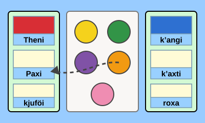
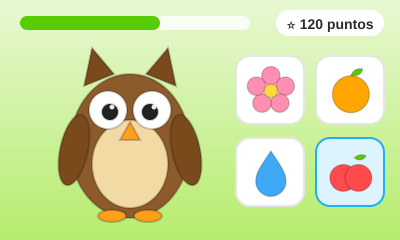
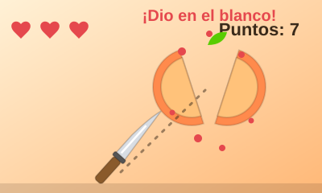

Colores en otomí
Arrastra cada círculo de color hasta su nombre en otomí. Son 5 niveles: empiezas con 3 colores y terminas con los 12.
▶ JugarDescansa un momento y diviértete. ¡Aquí encontrarás los juegos de la comunidad!

Arrastra cada círculo de color hasta su nombre en otomí. Son 5 niveles: empiezas con 3 colores y terminas con los 12.
▶ Jugar
Lecciones con imágenes, audio y escritura, más 6 minijuegos: memorama, sopa de letras, ahorcado, une, audio y escribe. ¡Gana puntos con cada acierto!
▶ Jugar
Mueve el cursor o el dedo y toca para lanzar el cuchillo. Atínale a la fruta: tienes 3 vidas y cada acierto la hace más rápida.
▶ Jugar